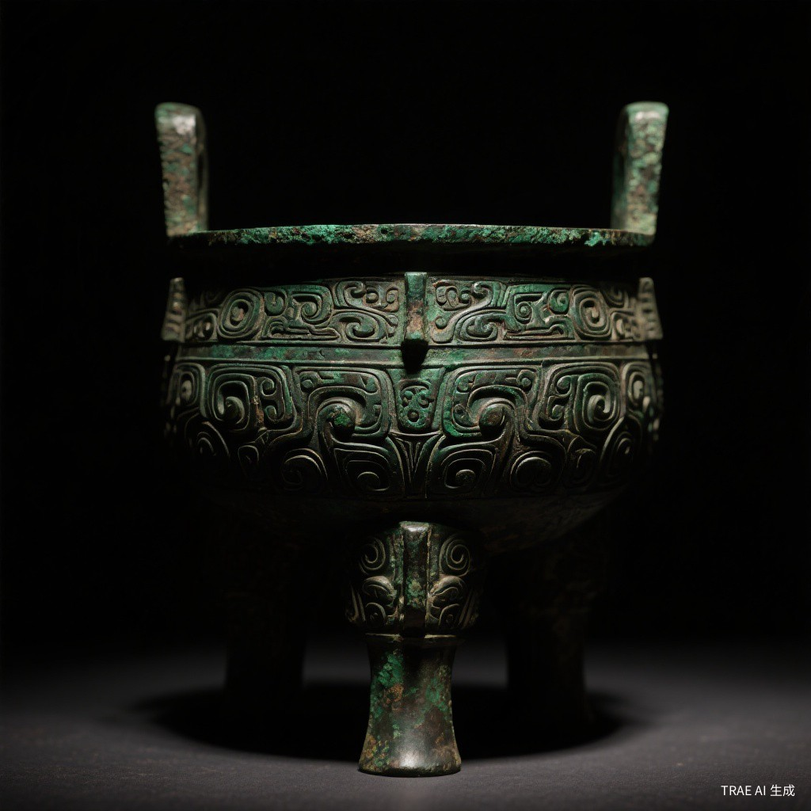

壹 · 器之灵
器物之美
Spirit of Vessels

商周时期
青铜礼器
鼎、簋、爵、尊等祭祀礼器
国之重器
青铜器是中华文明的重要标志。从后母戊鼎到四羊方尊，承载着古代先民的智慧与信仰

新石器时代
远古石器
石斧、石箭头、研磨器
文明曙光
石器是人类最早使用的工具之一，从旧石器时代的打制石器到新石器时代的磨制石器，见证了人类文明的起源

汉唐盛世
金银细工
金杯、银簪、镶嵌饰品
金银璀璨
从商周金箔到唐代金银器皿，展现了中国古代精湛的金属工艺水平与审美追求

唐宋明清
陶瓷名窑
汝窑天青、青花瓷、粉彩
瓷国之名
中国是瓷器的故乡，从宋代五大名窑到明清彩瓷，中国瓷器以其精湛工艺享誉世界